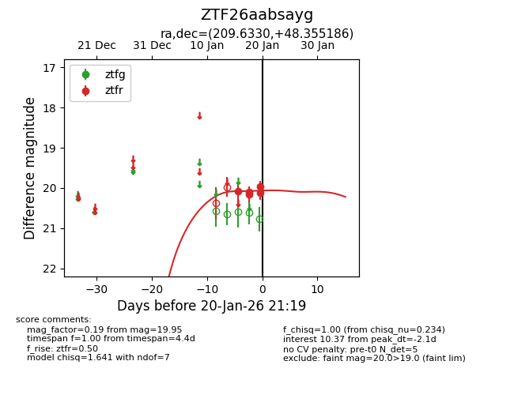
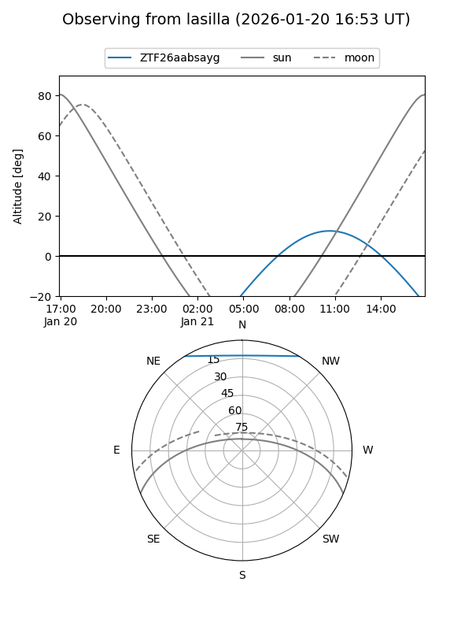
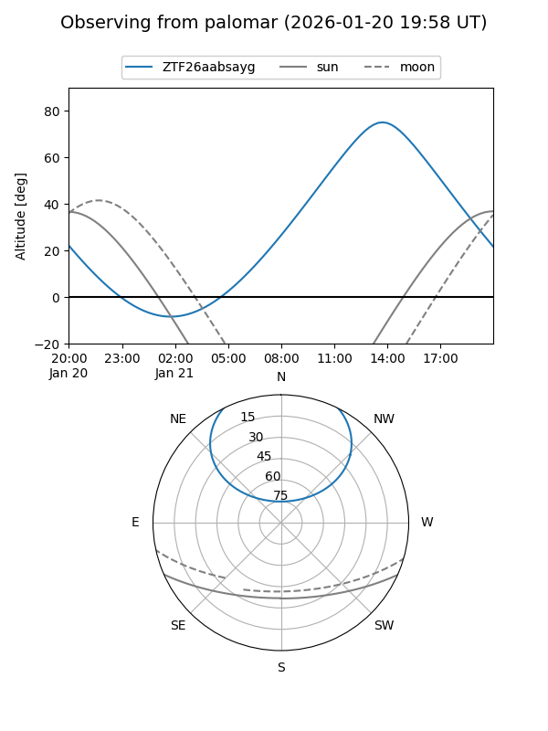

ZTF26aabsayg
Target ZTF26aabsayg at 2026-01-20 21:21
Aliases and brokers:
FINK: link
Lasair: link
ALeRCE: link
alt names
ZTF26aabsayg (ztf,fink_ztf)
Coordinates:
equatorial (ra, dec) = 209.6330,+48.35519
equatorial (HMS+DMS) = 13:58:31.93,+48:21:18.67
galactic (l, b) = (95.8444,+65.09279)
Flags:
Photometry:
last ztfr=19.95
5 ztfr detections
Lightcurve

Visibility


Additional plots